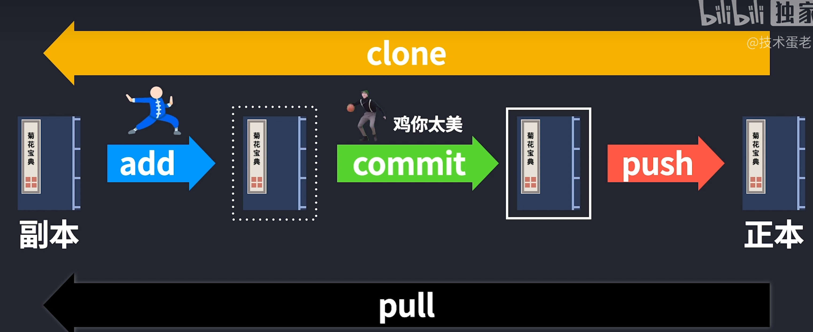
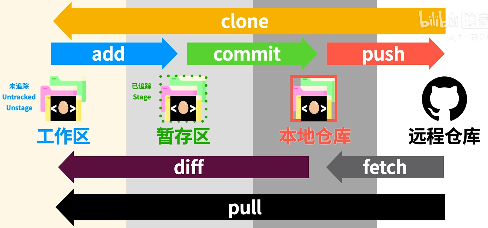
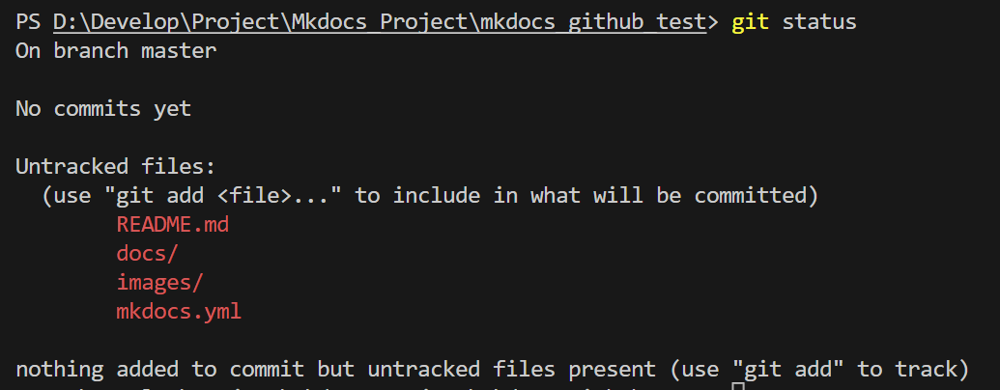
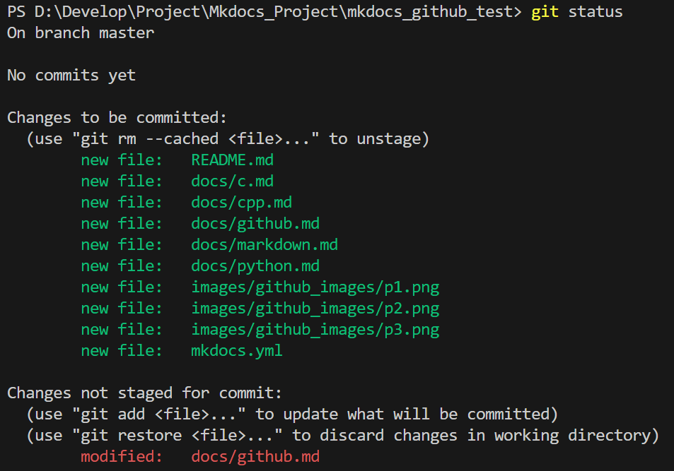
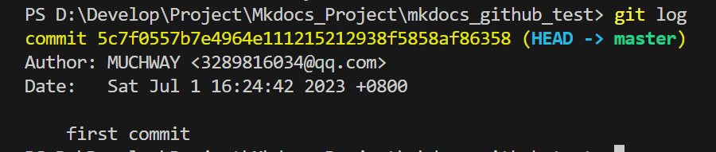
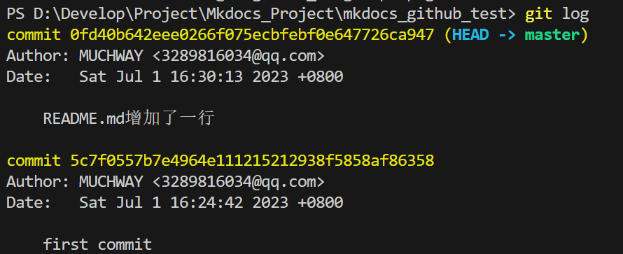
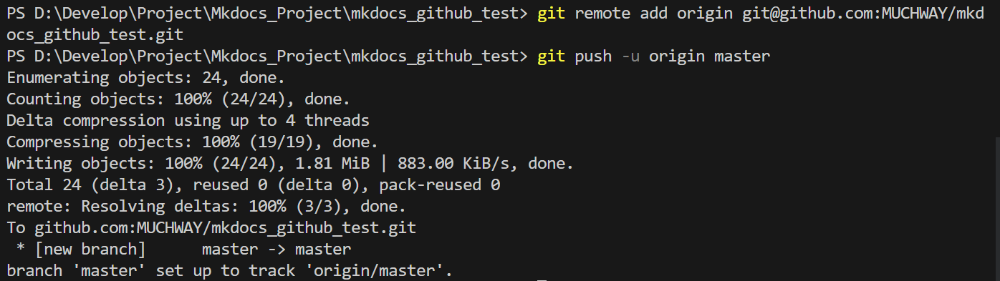
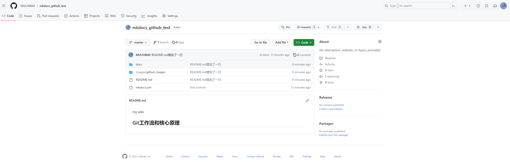

Github基本原理和操作
参考资料
Git基本原理
Git工作流和核心原理 | GitHub基本操作 | VS Code里使用Git和关联GitHub
形象地理解Git的原理

具体的Git原理

我们自己电脑中的文件夹叫做工作区，还有一个隐藏的.git文件夹，叫做版本库，版本库里面存了很多东西，其中最重要的就是stage（暂存区）
还有Git为我们自动创建了第一个分支master，以及指向master的一个指针HEAD。
GitHub基本操作
配置Git用户名和邮箱
git config --global user.name "Your Name"
git config --global user.email "Your Email"
查看git配置
git config --list
生成ssh key
ssh-keygen -t rsa -C "XXX@XX.com"
然后一路回车，生成ssh key。
然后在.ssh文件夹下面会生成id_rsa和id_rsa.pub两个文件，id_rsa是私钥，id_rsa.pub是公钥。
添加ssh key到github
打开id_rsa.pub文件，复制里面的内容，然后打开github，点击头像，选择settings，然后选择SSH and GPG keys，然后点击New SSH key，然后把复制的内容粘贴到key里面，然后点击Add SSH key。
测试ssh key是否配置成功
ssh -T
如果出现Hi MUCHWAY! You've successfully authenticated, but GitHub does not provide shell access.说明配置成功了。
创建版本库
git init
这样会创建一个.git文件夹，是隐藏的，对于git各种数据都记录在这个文件夹里面，暂存区、本地仓库都在这里面了。初始化后，默认处于master分支。
新建一个文件
echo 'my wiki' > README.md
查看状态
git status
可以看到README.md文件处于未跟踪状态：

他还提示了我们可以使用git add命令将其添加到暂存区。
添加文件到版本库
git add . # 添加当前目录下所有文件到暂存区
再次查看状态
git status
可以看到README.md和其他所有文件处于暂存区：

提交文件到版本库
git commit -m "first commit" # 提交到本地仓库, -m后面是本次提交的说明
查看提交日志
git log
可以看到我们刚刚提交的commit：

修改文件
echo '## Git工作流和核心原理' >> README.md
然后再次
git add README.md
git commit -m 'README.md增加了一行'
这之后我们再看提交日志：

可以看到我们的提交日志是有两个的，第一个是我们第一次提交的，第二个是我们第二次提交的，这就是我们的版本控制。
提交到远程仓库
git remote add origin git@github.com:MUCHWAY/mkdocs_github_test.git
origin是远程仓库的名字，可以自己取名字，但是一般都叫origin。
git push -u origin master
-u是第一次提交的时候需要加的，以后就不需要了。
这样就把本地的master分支推送到了远程仓库origin上面。

可以看到我们的github上面已经有了我们的文件了：

提交忽略文件
先创建一个.gitignore文件
touch .gitignore
然后在.gitignore文件中写入忽略文件的规则，比如忽略掉.pyc文件，就可以写成.pyc。
然后再次add和commit，然后再次push到远程仓库。
可以看到我们的*.pyc文件已经被忽略了。
创建新的分支
git branch dev # 创建dev分支
切换到dev分支
git checkout dev
或者可以直接创建并切换到dev分支
git checkout -b dev # 创建并切换到dev分支
此外
git branch # 查看当前分支
git checkout master # 切换到master分支
git branch -d dev # 删除dev分支
合并分支
git merge dev # 把dev分支合并到当前分支
合并完成后，可以删除dev分支了。
从远程仓库中删除文件
git rm -r --cached test.txt # 删除暂存区中的test.txt文件
git commit -m "fixed untracked files"
git push origin master
checkout命令
用于切换分支或恢复文件。它的作用取决于使用的参数。
git checkout
git checkout <commit>
它将会将工作目录更新为指定提交的版本，并将代码恢复到该提交的状态。这可以用于恢复到之前的版本，或者查看某个提交的代码。
git checkout -- <file>
它将会将指定文件恢复到最近一次提交的状态。这可以用于撤销对文件的更改。
git checkout
会更改工作目录和代码状态，因此在使用该命令之前，请确保已经保存了所有更改，并且已经提交了所有需要提交的更改。
常见问题
.gitignore设置后不起作用
其中一种解决方法是：
git rm -r --cached . # 删除本地缓存
git add . # 重新trace file
git commit -m "fixed untracked files"
git push origin master
git pull报错
MUCHWAY: error: Your local changes to the following files would be overwritten by merge:
docs/index.md
mkdocs.yml
Please commit your changes or stash them before you merge.
Aborting
这个错误提示表明你在本地修改了 docs/index.md 和 mkdocs.yml 这两个文件，而这些修改与你从远程仓库拉取的代码产生了冲突。你有两个解决方案：
1. 在拉取远程仓库的代码之前，先将你的本地修改提交到本地仓库。你可以执行以下命令：
git add docs/index.md mkdocs.yml
git commit -m "Committing changes before pulling from remote repository"
git pull
- 在拉取远程仓库的代码之前，将你的本地修改暂存起来。你可以执行以下命令：
git stash
git pull
拉取完代码后，你可以使用 git stash apply 命令将你的修改应用回来。
git stash 命令可以将你的本地修改暂存起来，以便你可以在不提交修改的情况下切换分支或拉取远程仓库的代码。当你执行 git stash 命令时，Git会将你的本地修改保存到一个栈中，并将你的工作目录恢复到上一次提交的状态。这样，你就可以在不提交修改的情况下执行其他操作，比如切换分支或拉取远程仓库的代码。
当你需要恢复你的本地修改时，可以使用 git stash apply 命令将你的修改应用回来。如果你有多个暂存的修改，可以使用 git stash list 命令查看所有的暂存记录，并使用 git stash apply stash@{n} 命令将指定的暂存记录应用回来。
- 还有以一种情况是想让远程仓库的代码覆盖我本地的代码
执行git fetch命令拉取远程仓库的代码;
执行git reset命令将本地仓库的 HEAD 指针指向远程仓库的代码;
这个命令会将本地仓库的 HEAD 指针指向远程仓库的 master 分支的最新提交，同时将你本地的代码覆盖为远程仓库的代码。
注意：这个操作会丢失你本地未提交的修改，请确保你已经将本地的修改提交或者暂存起来了。
这句话是用来测试的
我现在进行改变了